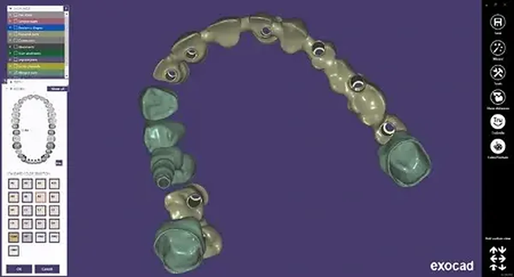

Primirea fisierelor
Stabilim canalul de transmitere si identificam fisierele necesare pentru arcada de lucru, antagonist si ocluzie.
Flux digital pentru cabinete
Laborator Dentar CDL primeste cazuri digitale de la medici si clinici, verifica informatiile tehnice si integreaza proiectarea CAD/CAM in realizarea lucrarilor protetice pe dinti si implanturi.

Cum functioneaza
Stabilim canalul de transmitere si identificam fisierele necesare pentru arcada de lucru, antagonist si ocluzie.
Verificam orientarea, zonele scanate si informatiile disponibile inainte de a incepe proiectarea.
Proiectarea si etapele de productie sunt adaptate materialului, indicatiei si componentelor cazului.

Checklist digital
Flux hibrid
Laboratorul poate integra date digitale si etape conventionale, in functie de dotarea cabinetului si de particularitatile cazului.
Fisiere transmise direct, fara transportul unei amprente fizice.
Modele si inregistrari conventionale pentru cabinetele care folosesc fluxul clasic.
Integrarea proiectarii si a modelelor in etapele de productie.
Verificarea platformei, scan body-ului si componentelor inainte de executie.
Intrebari frecvente
Fisierele STL sunt folosite frecvent. Canalul si setul complet de fisiere se confirma pentru fiecare caz.
Pentru majoritatea cazurilor sunt necesare si antagonistul si ocluzia. Datele incomplete pot impiedica proiectarea corecta.
Putem analiza fisiere exportabile si compatibile cu fluxul de lucru. Compatibilitatea se confirma inainte de primul caz.
Contactati laboratorul pentru canalul de transfer si denumirea corecta a cazului.
Primul caz digital